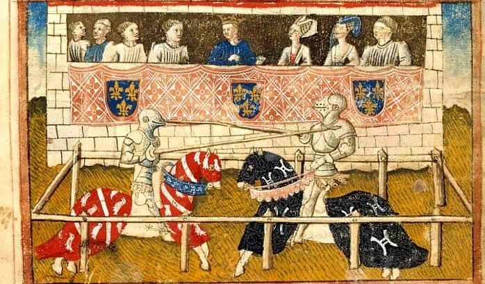
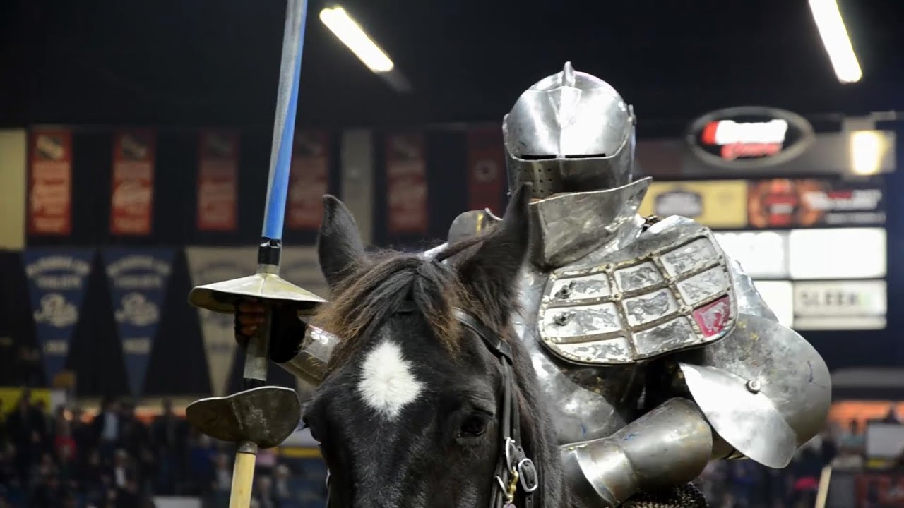

Sejarah Olahraga Jousting

1. Asal-Usul Jousting di Eropa Abad Pertengahan
Jousting pertama kali muncul di Eropa Barat sekitar abad ke-11, terutama di wilayah Prancis dan Normandia. Pada masa tersebut, jousting bukanlah olahraga hiburan, melainkan metode latihan militer bagi ksatria berkuda. Perang abad pertengahan sangat mengandalkan pasukan kavaleri berat, sehingga kemampuan bertarung menggunakan tombak dari atas kuda menjadi keterampilan yang sangat penting.
Latihan ini dilakukan dalam bentuk duel satu lawan satu dengan kecepatan tinggi, bertujuan melatih kekuatan, keseimbangan, ketepatan sasaran, dan keberanian. Pada fase awal, jousting sangat berbahaya karena menggunakan senjata asli dan hampir tidak memiliki aturan keselamatan.
2. Peran Bangsawan dan Turnamen Feodal
Seiring berkembangnya sistem feodal pada abad ke-12 dan ke-13, para bangsawan mulai menyelenggarakan turnamen jousting sebagai ajang hiburan, pelatihan militer, dan demonstrasi kekuasaan. Turnamen menjadi sarana untuk memperlihatkan status sosial, kekayaan, serta kekuatan militer suatu wilayah.
Dalam periode ini, jousting mulai memiliki struktur yang lebih jelas, termasuk arena khusus, aturan dasar, serta pembatasan area sasaran. Kehadiran penonton dari berbagai lapisan masyarakat menjadikan jousting sebagai tontonan publik yang sangat populer.
3. Masa Keemasan Jousting dan Dukungan Kerajaan
Abad ke-14 hingga ke-15 dianggap sebagai masa keemasan jousting. Pada periode ini, olahraga tersebut mendapatkan dukungan penuh dari kerajaan-kerajaan besar di Eropa. Jousting sering diselenggarakan dalam rangka perayaan penobatan raja, pernikahan kerajaan, atau peristiwa diplomatik penting.
Teknologi perlengkapan juga berkembang pesat. Armor khusus turnamen dirancang lebih tebal di bagian dada dan bahu, sementara tombak dibuat agar mudah patah saat benturan untuk mengurangi risiko kematian. Hal ini menunjukkan upaya serius untuk menjadikan jousting lebih aman tanpa menghilangkan unsur tantangan.
4. Peristiwa Bersejarah dan Dampak Fatal Jousting
Meskipun telah mengalami peningkatan keamanan, jousting tetap menjadi olahraga yang berisiko tinggi. Salah satu peristiwa paling terkenal terjadi pada tahun 1559, ketika Henry II dari Prancis mengalami cedera fatal akibat pecahan tombak yang menembus helmnya saat turnamen. Insiden ini mengguncang Eropa dan memperkuat pandangan bahwa jousting berbahaya bahkan bagi bangsawan tertinggi.

Peristiwa-peristiwa semacam ini mendorong banyak kerajaan untuk membatasi atau bahkan melarang turnamen jousting, terutama yang melibatkan keluarga kerajaan. Sejak saat itu, jousting mulai kehilangan posisinya sebagai olahraga utama bangsawan.
5. Penurunan Popularitas akibat Perubahan Teknologi Militer
Memasuki abad ke-16, perubahan besar dalam teknologi peperangan turut mempercepat kemunduran jousting. Senjata api seperti arquebus dan musket mulai menggantikan peran pasukan berkuda berat. Akibatnya, keterampilan bertempur menggunakan tombak dari atas kuda tidak lagi relevan di medan perang.
Armor berat yang sebelumnya menjadi simbol kekuatan ksatria juga menjadi tidak praktis. Jousting pun perlahan berubah dari latihan militer menjadi sekadar tradisi seremonial yang jarang dipraktikkan.
6. Warisan Sejarah Jousting di Era Modern
Meskipun telah lama ditinggalkan sebagai olahraga utama, jousting tetap hidup sebagai warisan budaya. Festival sejarah, rekonstruksi abad pertengahan, museum armor, serta pertunjukan edukatif di berbagai negara Eropa terus memperkenalkan jousting kepada generasi modern.
Dalam konteks ini, jousting tidak lagi dipandang sebagai ajang pertarungan, melainkan sebagai simbol budaya ksatria yang merepresentasikan nilai keberanian, kehormatan, dan disiplin. Oleh karena itu, jousting tetap dipelajari dan dihargai sebagai bagian penting dari sejarah Eropa.
